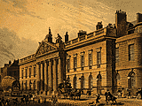
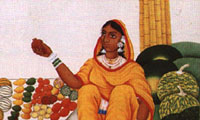
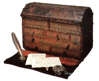
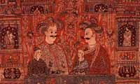

The East India Company was formed in 1600 in London by appointment of Queen Elizabeth I. The English did not venture into Bengal until about fifty years later. In 1687, the Company was offered the village of Uluberia, but rejected it as too prone to silting. The Company suggested instead the village of Sutanuti, already a trading post.
Job Charnock represented the East India Company when the factory at Sutanuti opened on August 24, 1690. In 1696, Emperor Aurungzeb granted permission to fortify their possessions. Far-sighted Armenian traders, realising the Company could provide better security than the Dutch in Chinsurah, financed the purchase of Sutanuti and the neighbouring villages of Kolikata and Gobindopur in 1698. Construction of Fort William was completed in 1699, and Calcutta — the union of three villages — was born.


Even though the site was not prone to silting, Calcutta was located next to a huge salt water lake — a breeding ground for mosquitoes — that flooded during the rains and left behind fish that died and putrefied, causing epidemics of cholera and malaria. More than a third of the European population perished in such plagues. This earned Calcutta the sobriquet of "Charnock's Folly" and the "Chance Erected City." Nevertheless, the settlement flourished because of excellent trade prospects. In 1707, Calcutta became a separate Presidency reporting directly to the Board of Directors in London.
A delegation led by Dr. Hamilton visited the court of Emperor Farrucksiyar in 1715. The Emperor, indisposed by an illness that the surgeon cured, confirmed the rights of the Company and granted ownership of thirty-seven townships, including Howrah. To defend against Mahratta marauders, the Mahratta Ditch was built in 1742.
By the mid-eighteenth century, Calcutta was a large city with a fort, a chapel (now the site of St. John's Church), a building for the clerks — or writers — and jetties for ships. That hostel for writers was rebuilt and continues to this day as the Writers' Building, seat of the state secretariat.

In 1756, Nawab Sirajuddaulah marched on Calcutta and besieged the city on June 16. English troops were rounded up and confined to a tiny room in Fort William. By the next morning, 123 of 146 soldiers had died. This incident — called The Black Hole — has been disputed by historians as highly exaggerated. A memorial was built near the site, later moved to St. John's Church where it stands beside the tomb of Job Charnock.
